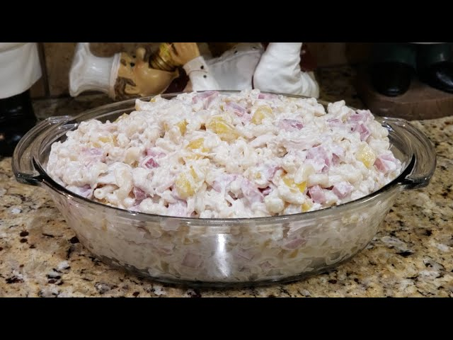

Home
Ensalada Fria

Description
Based on a creamy pasta made with mayonnaise, peas, carrots, onions, ham and chicken.
It is served chilled and is especially popular at family gatherings, holidays, and celebrations in Cuba.
Ingredients
- Pasta
- Ham
- Chichen
- Mayonnaise
- Peas
- Carrots
- Onions
- Salt
- Black Pepper
Steps
- Cook the pasta until tender, then let it cool completely.
- Boil the peas and carrots if they are not already cooked, and chop the onions finely.
- Cut the ham and chicken into small pieces.
- In a large bowl, combine the pasta with the peas, carrots, onions, and protein.
- Add mayonnaise, salt, and black pepper, then mix everything well until evenly coated.
- Refrigerate the salad for at least 1 hour before serving so it is cold and flavorful.